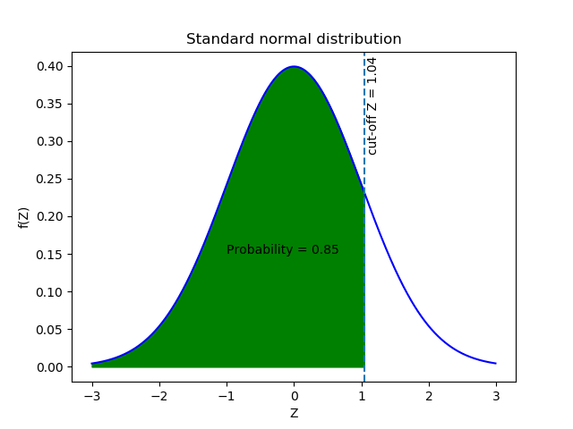

Intro to Statistics
Back to Analyzer
Binomial DISTRIBUTIONS
Central limit theorem
Chi squared
Binomial DISTRIBUTIONS
Margin of Error
Permutations-AlikeElements
Permutations-NoAlikeElements
Z-Scores
Matrix Multiplication
TEST-histogram
descriptive stats
This meme depicts a midwit. someone who's iq is exaclty 100.
68% of the population falls within 1 standard deviation of 15. Between 85 and 115
95% of the population falls within 2 standard deviations, between 70 and 130
The other 5% is split between your dumbest and smartest people.
What this meme suggest is that they agree with eachother.
Note: Emperical Rule 68% of elements fall within 1 standard deviation from the mean. 95% within 2
ONLY works on NORMAL DISTRIBUTIONS
If we do not have a mean or standard deviation we can estimate with a Confidence Interval
95% confidence interval is like we said earlier. 2 standard deviations from the mean. x2o

Other key term:
Sample Size
Standard Deviation - amount of variation
Population
Critical Value - A critical value defines regions in the sampling distribution of a test statistic. These values play a role in both hypothesis tests and confidence intervals. In hypothesis tests, critical values determine whether the results are statistically significant. For confidence intervals, they help calculate the upper and lower limits.
Point Estimate - point estimation is the process of using sample data to calculate a single value (known as a point estimate) which is to serve as a "best guess" or "best estimate" of an unknown population parameter.
Critical Value - Critical values are the boundary between nonsignificant and significant results in a hypothesis test. They are cut-off values that divide the scale of your test statistic into the rejection region and the non-rejection region.
Z-Score
z-score is the BOTTOM LINE used to get the AREA under the curve. in this case a Z-Score of 1.04 gives us and area of .85 or 85% of probability.
